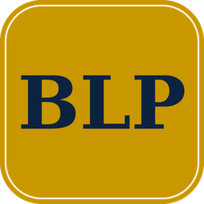
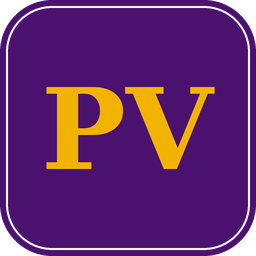

Provost's Postdoctoral Fellow
2026 – 2028
The full record on one page: appointments, education, awards, talks, experience, mentoring, and service. Publications live on their own page.





References available upon request.